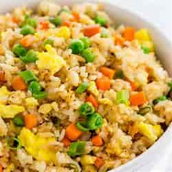

fried rice

ingredients
- 2 cups of cooked rice (preferably chilled)
- 2 tablespoons of oil (vegetable or sesame oil)
-
- 2 cloves of garlic, minced
-
- 1 small onion, diced
- 1 cup of mixed vegetables (peas, carrots, corn)
- 2 eggs, lightly beaten
- 2 tablespoons of soy sauce
- 1 tablespoon of oyster sauce (optional)
- 1 teaspoon of salt
- 1 teaspoon of black pepper
- 2-3 green onions, chopped
- 1/2 cup of cooked, diced chicken, shrimp, or tofu (optional)
steps to cook
- Prepare your rice: If possible, use leftover rice that's been chilled. Freshly cooked rice tends to be too moist and sticky for fried rice.
- Heat the oil: In a large pan or wok, heat the oil over medium-high heat.
- Cook the garlic and onion: Add the minced garlic and diced onion to the pan and stir-fry for about 1-2 minutes until fragrant.
- Add the vegetables: Toss in your mixed vegetables and stir-fry for another 2-3 minutes until they are tender.
- Scramble the eggs: Push the vegetables to one side of the pan and pour the beaten eggs into the other side. Scramble the eggs until they are just cooked, then mix them with the vegetables.
- Add the rice: Add the cooked rice to the pan, breaking up any clumps with your spatula. Stir everything together well.
- Season: Pour in the soy sauce and oyster sauce (if using), and season with salt and black pepper. Mix well to ensure the rice is evenly coated.
- Optional protein: If you're adding cooked chicken, shrimp, or tofu, now is the time to stir it in.
- Finish with green onions: Sprinkle the chopped green onions over the fried rice and give it one last stir.
- Serve: Your fried rice is ready to be served hot. Enjoy your meal!
enjoy your meal